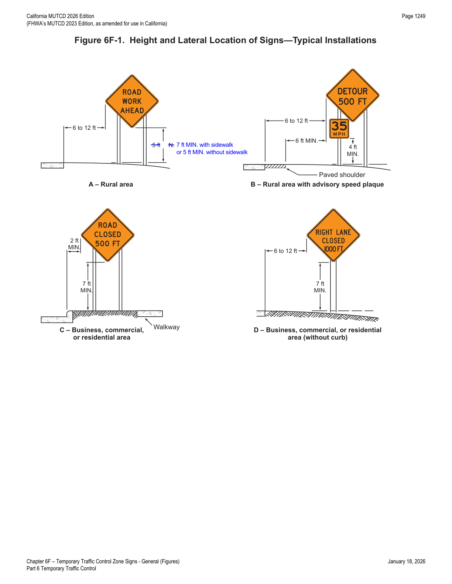
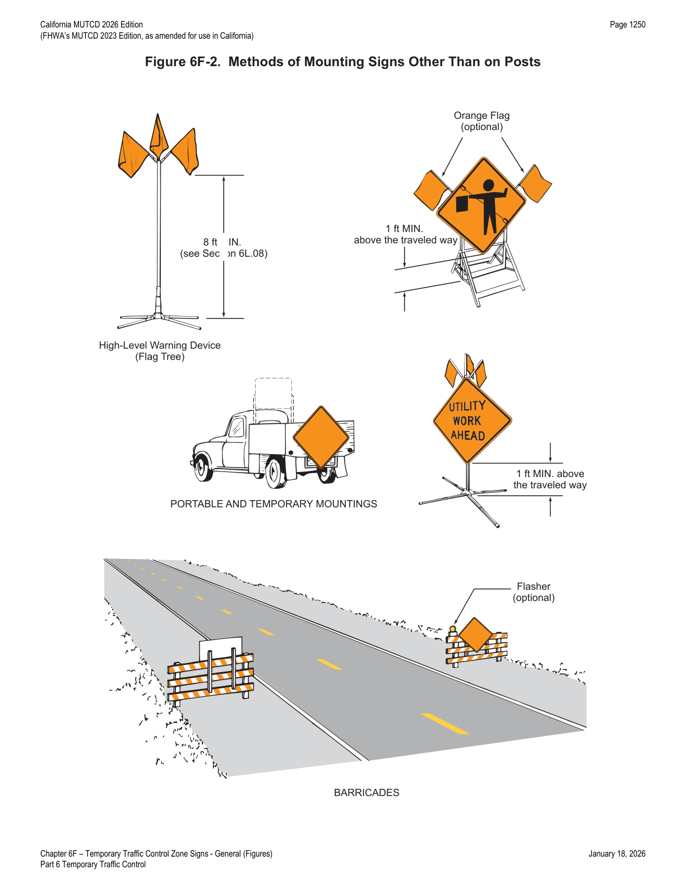

Part 6 · Temporary Traffic Control · Chapter 6F
Temporary Traffic Control Zone Signs — General
The general rules that apply to every TTC zone sign regardless of its specific message: color and retroreflectivity requirements, sizing tables, mounting height and lateral placement, non-post mounting methods, and maintenance.
6F.01General Characteristics of TTC Zone Signs
Support — Background/Explanatory
- 01TTC zone signs convey both general and specific messages by means of words, symbols, and/or arrows and have the same three categories as all road user signs: regulatory, warning, and guide.
Option — Permissive
- 02Where the color orange is required, the fluorescent orange color may also be used.
Support — Background/Explanatory
- 03The fluorescent version of orange provides higher conspicuity than standard orange, especially during twilight.
Option — Permissive
- 04Standard orange flags, flashing beacons, and/or flashing warning lights may be used in conjunction with signs.
Standard — Mandatory Requirement
- 05When standard orange flags, flashing beacons, and/or flashing warning lights are used in conjunction with a sign, they shall not block the sign face.
- 06Except as provided in Section 2A.07, the sizes for TTC signs and plaques shall be as shown in Tables 6G-1, 6G-1(CA), 6H-1, 6H-1(CA), 6I-1, and 6I-1(CA). The sizes in the minimum column shall only be used on low-volume rural roads, local streets, or roadways where the operating speed is 30 mph or less.
Option — Permissive
- 07The dimensions of signs and plaques shown in Tables 6G-1, 6G-1(CA), 6H-1, 6H-1(CA), 6I-1, and 6I-1(CA) may be increased wherever necessary for greater legibility or emphasis.
Guidance — Recommended Practice
- 08Deviations from standard sizes as prescribed in this Manual should be in 6-inch increments.
Support — Background/Explanatory
- 09Sign design details are contained in the "Standard Highway Signs" publication (see Section 1A.05).
- 10Section 2A.04 contains additional information regarding the design of signs, including an Option allowing the development of special word message signs if a standard word message or symbol sign is not available to convey the necessary regulatory, warning, or guidance information.
Standard — Mandatory Requirement
- 11All signs used at night shall be either retroreflective or illuminated to show the same shape and similar color both day and night.
- 12The requirement for sign illumination shall not be considered to be satisfied by street, highway, or strobe lighting.
- 12aTTC zone signs used at night shall maintain retroreflectivity at or above the minimum levels in Table 2A-5.
Option — Permissive
- 13Sign illumination may be either internal or external.
- 14Signs may be made of rigid or flexible material.
Support — Background/Explanatory
- 15Sign design details are contained in FHWA's "Standard Highway Signs and Markings" book and Caltrans' California Sign Specifications. Refer to Section 1A.05 for information regarding these publications.
6F.02Sign Placement
Guidance — Recommended Practice
- 01Signs should be located on the right-hand side of the roadway unless otherwise provided in this Manual.
Option — Permissive
- 02Where special emphasis is needed, signs may be placed on both the left-hand and right-hand sides of the roadway. Signs mounted on portable supports may be placed within the roadway itself. Signs may also be mounted on or above barricades.
Support — Background/Explanatory
- 03The provisions of this Section regarding mounting height apply unless otherwise provided for a particular sign elsewhere in this Manual.
Standard — Mandatory Requirement
- 04The minimum height, measured vertically from the bottom of the sign to the elevation of the near edge of the pavement, of signs installed at the side of the road in rural areas shall be 5 feet (see Figure 6F-1).
- 05The minimum height, measured vertically from the bottom of the sign to the top of the curb, or in the absence of curb, measured vertically from the bottom of the sign to the elevation of the near edge of the traveled way, of signs installed at the side of the road in business, commercial, or residential areas where parking or pedestrian movements are likely to occur, or where the view of the sign might be obstructed, shall be 7 feet (see Figure 6F-1).
- 06The minimum height, measured vertically from the bottom of the sign to the sidewalk, of signs installed above sidewalks shall be 7 feet.
- 07The bottom of a sign mounted on a barricade, or other portable support, shall be at least 1 foot above the traveled way.
Option — Permissive
- 08The height to the bottom of a secondary sign mounted below another sign may be 1 foot less than the height provided in Paragraphs 4 through 6 of this Section.
Guidance — Recommended Practice
- 09Neither portable nor permanent sign supports should be located on sidewalks, bicycle facilities, or areas designated for pedestrians or bicyclists. Sign supports should be located so as to accommodate bicyclists in areas designated for their use. A minimum lateral width of 4 feet should be maintained for pedestrian pathways.
Standard — Mandatory Requirement
- 10Signs shall be mounted and placed in accordance with Section 307 of the U.S. Department of Justice 2010 ADA Standards for Accessible Design, September 15, 2010, 28 CFR 35 and 36, Americans with Disabilities Act of 1990.
Guidance — Recommended Practice
- 11Except as provided in Paragraph 12 of this Section (refer to Figures 6G-1, 6G-1(CA), 6H-1, 6H-1(CA), 6I-1, and 6I-1(CA)), signs mounted on portable sign supports that do not meet the minimum mounting heights provided in Part 2 should not be used for a duration of more than 3 days.
Option — Permissive
- 12The R9-8 through R9-11a series, R11 series, W1-6 through W1-8 series, M4-10, E5-1, or other similar type signs (see Figures 6G-1, 6G-1(CA), 6H-1, 6H-1(CA), 6I-1, and 6I-1(CA)) may be used on portable sign supports that do not meet the minimum mounting heights provided in Part 2 for longer than 3 days.
Support — Background/Explanatory
- 13Methods of mounting signs other than on posts are illustrated in Figure 6F-2.
Guidance — Recommended Practice
- 14Signs mounted on Type 3 Barricades should not cover more than 50 percent of the top two rails or 33 percent of the total area of the three rails.
Standard — Mandatory Requirement
- 15Signs and sign supports used together shall be crashworthy (see Section 6A.04). Where large signs having an area exceeding 50 square feet are installed on multiple breakaway posts, the clearance from the ground to the bottom of the sign shall be at least 7 feet.
Option — Permissive
- 16For mobile operations, a sign may be mounted on a work vehicle, a shadow vehicle, or a trailer stationed in advance of the TTC zone or moving along with it.
- 17Refer to Section 2A.18 for mounting of small plastic signs on channelizers (CA), cones, or portable delineators.


In practice, the mounting-height matrix in Figure 6F-1 is one of the most frequently checked items in a field audit: 5 ft in rural areas without a sidewalk, 7 ft anywhere pedestrians or parking are likely (business/commercial/residential, or any area with a sidewalk), and 7 ft above any sidewalk overhead — with barricade- and portable-mounted signs held to a separate 1-ft-above-pavement minimum.
6F.03Sign Maintenance
Guidance — Recommended Practice
- 01Signs should be properly maintained for cleanliness, visibility, retroreflectivity, and correct positioning.
- 02Signs that have lost significant legibility should be promptly replaced.
Support — Background/Explanatory
- 03Section 2A.21 contains information regarding the retroreflectivity of signs, including the signs that are used in TTC zones.
★ Key Takeaways — Chapter 6F
- TTC signs fall into the same three categories as permanent signs — regulatory, warning, and guide — and standard sign sizes are set by Tables 6G-1/6G-1(CA), 6H-1/6H-1(CA), and 6I-1/6I-1(CA); the "minimum" column is reserved for low-volume rural roads, local streets, or ≤30 mph operating speed. Size deviations should be in 6-inch increments.
- Every sign used at night must be retroreflective or illuminated to the same shape/color as daytime — street/highway/strobe lighting never satisfies this — and must meet the minimum retroreflectivity levels in Table 2A-5.
- Minimum mounting heights: 5 ft in rural areas, 7 ft in business/commercial/residential areas or wherever parking/pedestrians are likely or sight lines may be obstructed, 7 ft over sidewalks, and 1 ft above the traveled way for barricade/portable-mounted signs (secondary signs below another sign may be 1 ft lower).
- Portable sign supports below Part 2 minimum heights should not be used beyond 3 days, except for a specific list of signs (R9-8 through R9-11a, R11 series, W1-6 through W1-8, M4-10, E5-1, and similar).
- Signs and their supports must be crashworthy; signs over 50 sq ft on multiple breakaway posts need at least 7 ft of ground clearance, and Type 3 Barricade-mounted signs should not exceed 50% of the top two rails or 33% of total rail area.
- Ongoing maintenance — cleanliness, visibility, retroreflectivity, correct positioning, and prompt replacement of illegible signs — is itself a Guidance-level obligation, not a one-time installation task.